Madagascar·UNESCO World Heritage·Rainforests of the Atsinanana
Ranomafana
A world found nowhere else.
Fourteen kinds of lemur, 43,550 hectares of rainforest, and hot springs at the bottom of the valley. Your visit keeps it alive.Fourteen kinds of lemur, hot springs below. Your visit keeps it alive.
UNESCO World Heritage Ranomafana is home to fourteen kinds of lemur, including the rare golden bamboo lemur. Track them with a local guide, find chameleons by torchlight, hike to waterfalls, kayak the Namorona and unwind in the hot springs.
Your stay makes a difference: park fees help protect the forest, and the guides, cooks and hosts you meet live here. Hire local. Buy local. Keep the forest standing.
We look forward to welcoming you to Ranomafana, and hope to see you soon!
55,000 ArPark entry per adult, per day, plus a {communityFee} community fee
Guide requiredThrough your hotel, or at the park.How it works →
Cash onlyAriary, in small notes
07:00–17:00Park opening hours. Mid-morning is best for lemurs
From canopy to spring
Four layers of one forest.
01 · Canopy
Where the lemurs come down to breakfast.Lemurs at breakfast
Fourteen species, including the golden bamboo lemur, discovered here in 1986 and the reason this forest is protected. The park opens at 07:00; mid-morning, when the lemurs settle in to feed, is the best time to go in.
Look twice. That leaf is a gecko.Geckos after dark
Leaf-tailed geckos, chameleons and more than 90 kinds of frog live a metre off the ground. They come out after dark, and a guided night walk is the way to find them.
Falls, pools and the Namorona.Falls & forest pools
Waterfall walks with free access, kayaking on the river, and community-run reserves like VOI Ambohimagneva, where trails to pools in the forest are being opened to visitors.
{stays} places, from research-station dorms at the park’s edge to riverside bungalows and village guesthouses. Book direct where you can, and all of your payment reaches the place you stay.
No places match those filters.
Places to eat
{eats} places: Malagasy kitchens, French-style hotel dining rooms and snack bars by the park gate.
No places match those filters.
Things to do
{dos} ways in: the national park and its circuits, community reserves, waterfalls, the thermal springs and the village.
Nothing matches that search.
Ranomafana National Park
{circuits} ways in · one ticket, one guide
Choose how deep to go.
What to look out for
Good to know
Photos
Stay out after dark
Required in the park
Hiring a guide
Nobody walks the park alone. A certified Madagascar National Parks guide has been required for international visitors since 2010, and they are the reason you will actually see the animals. Your guide lives here, so hiring one is also one of the most direct ways your visit supports the village.
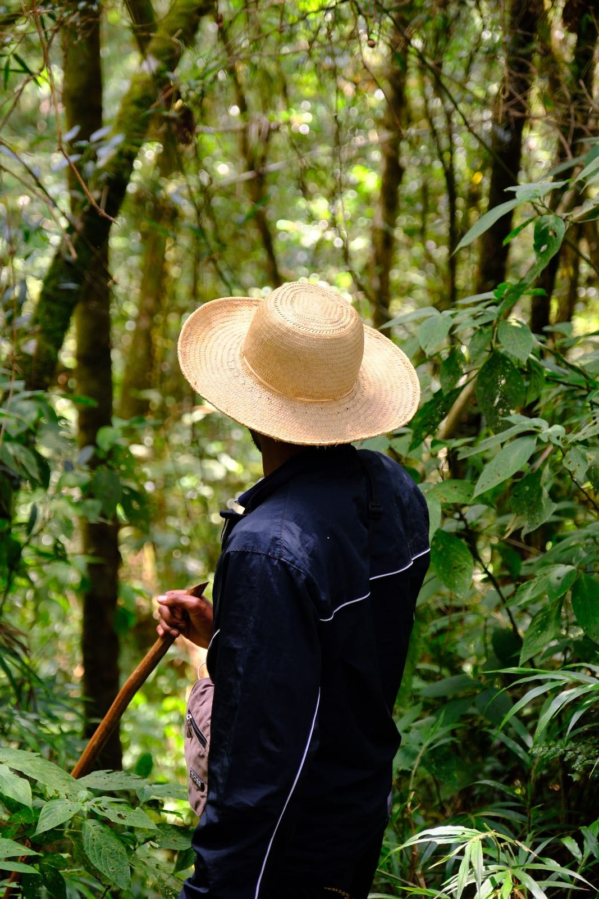
How it works
01Find a guideAsk your hotel, or turn up at the park and choose from the guides working that day. Guides can’t be booked online.
02Pick a walkWalks are priced by circuit and length, and specialists cost more. Tell your guide about your fitness and any worries: they will adapt the route to suit you.
03Pay in AriaryCash only: park entry, the community fee at its own booth, and the guide fee for your group.
04Go mid-morningThe park is open {parkHours}. Mid-morning, when the lemurs are awake and settling in to feed, is the best time. Getting to the gate →
What it costs
One fee per group
The guide fee is shared by everyone in your group, so it costs less each with more people. One guide takes a group of one to four; groups of six or more need at least two.
Walk
Paid at the gate
Guide rates by circuit, {feesAsOf}. Plus park entry: {entryFee} per adult per day ({childFee} ages 5–12, under 5 free) and a {communityFee} community fee. Park fees →
Travelling solo?
Share the guide
Ask the park office to pair you with other visitors so you split one guide fee.
The team behind your guide
Spotters in the forest
Animal spotters work the forest and tell your guide by phone where the animals are, so you can walk straight to them. The spotter is included in the guide’s price.
Ask for a specialist
Specialist guides are experts in finding and explaining the park’s birds, plants, or reptiles and amphibians. Because of that expertise they cost {specialistFee}, whatever the circuit. Specialist guides can also be arranged through Centre ValBio.
PrimatologyLemurs, including the golden bamboo lemur.
HerpetologyFrogs, chameleons and leaf-tailed geckos.
BotanyOrchids, giant ferns and the forest itself.
Outside the park
Community guides, village fees
VOI Mitsinjo
Community guides from Ambatolahy lead day and night walks, and the fees go straight to the village.
VOI Ambohimagneva
A 75-hectare reserve bordering the national park, about 3 km from town on foot, managed by the local community association (the VOI) under Madagascar’s community forest-management law. Trails and a river waterfall are being opened to visitors, with guides certified by Madagascar National Parks and research links to Centre ValBio. Visitor access is still being set up, so ask before you go.
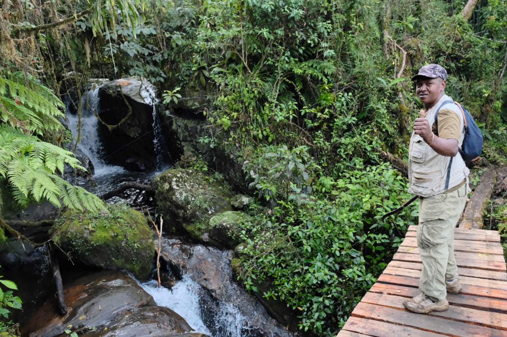
Night walks along the forest edge by the RN25 need no park ticket.
Sources: guide prices by circuit, specialist rates, group sizes, opening hours and how to find a guide from this guide’s own local notes (October 2026), consistent with trip reports (The Travelling Sloth, August 2025; The Blog of Dimi, January 2024); community fee from Madagascar National Parks; community guides from this guide’s own park listings; specialities from The Blog of Dimi; Centre ValBio specialists from Wikipedia; spotters by phone from Wikivoyage. Prices change, so confirm at the park office.
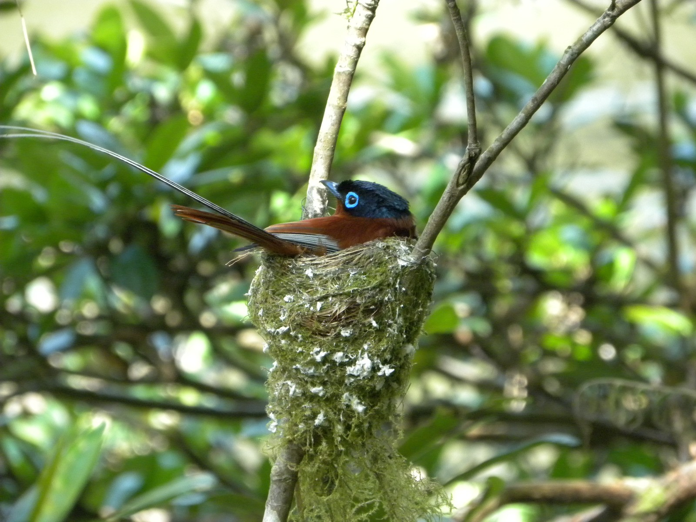
Birdwatching in Ranomafana
125 kinds of bird live in the park, many of them found only in Madagascar. What to look for, where to go, and how to find a guide who knows their calls.
Ranomafana for birders
125bird species in the park
6rare forest birds that make the park a Key Biodiversity Area
07:00the park opens, and birds are most active in the morning
1–4birders share one specialist guide
Birds to look for
All of these were photographed in Ranomafana. Your guide will know where to find them, and many more.
Madagascar paradise flycatcher
Photographed on its mossy nest in the park.
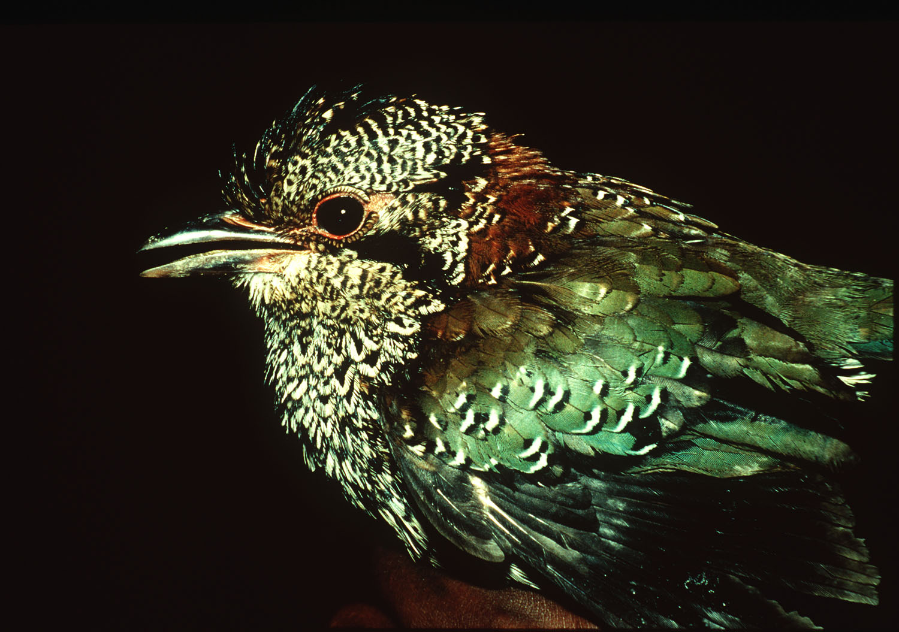
Scaly ground-roller
One of the shy birds of the forest floor.
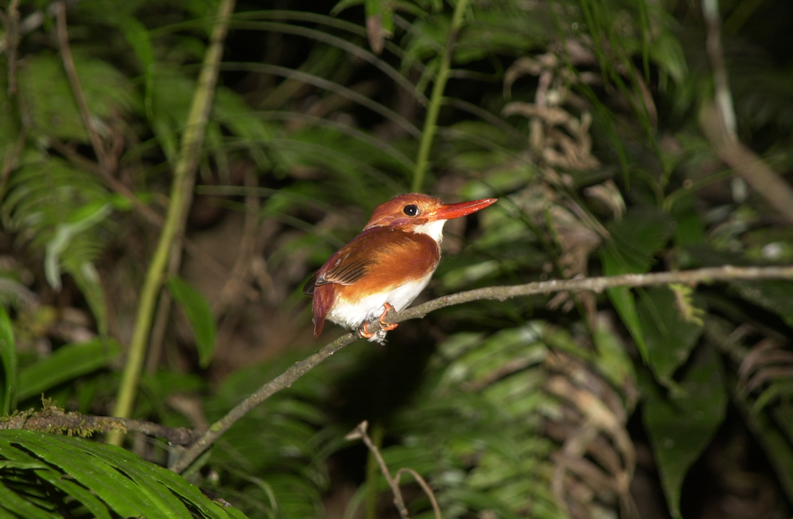
Madagascar pygmy kingfisher
Seen perched on a twig on the night walk.
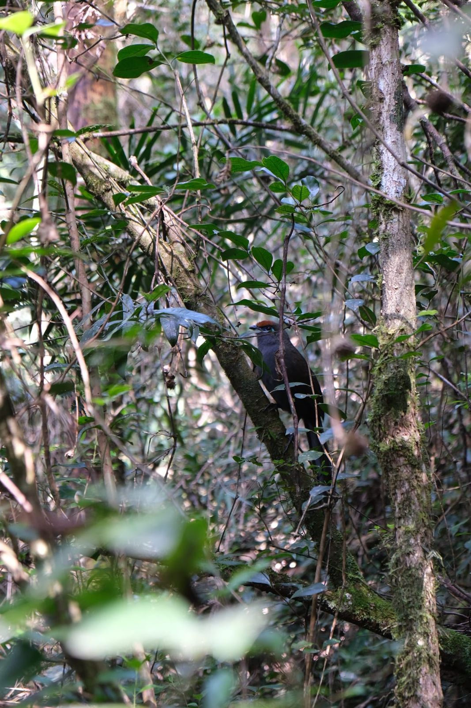
Also look for
Forest ibisBlue vangaGround-rollersAsities
Why birders come here
Ranomafana National Park is a Key Biodiversity Area, a site of global importance for nature. These six forest birds are why it qualifies: each lives in a small range, and depends on Madagascar’s eastern rainforest. Finding them takes patience, and a guide who knows their calls.
01Ask for a bird specialistAt the park office, ask for a specialist guide in ornithology by name. They cost {specialistFee} per group of one to four, on any circuit, and can also be arranged through Centre ValBio.
02Start earlyThe park is open {parkHours}. Birds are most active in the morning, so be at the gate when it opens.
03Walk VohipararaThe higher forest at the park’s western edge is the birders’ circuit. It is cooler and wetter than Talatakely, and on the two-day route it leads on to the sacred lake.
04Pack for itBinoculars, as the guides may not have spare pairs, plus a warm layer and a rain shell.
International visitors also pay park entry: {entryFee} per adult per day ({childFee} ages 5–12, under 5 free) and a {communityFee} community fee. Park fees →
Sources: the number of bird species from Madagascar National Parks; the six birds behind the Key Biodiversity Area from its factsheet for Ranomafana National Park (keybiodiversityareas.org, checked October 2026); the specialist guide fee from the notice board at the park office (October 2026); opening hours, the circuit and the tips from this guide’s own local notes (October 2026); photos taken in Ranomafana for this guide. Prices change, so confirm at the park office.
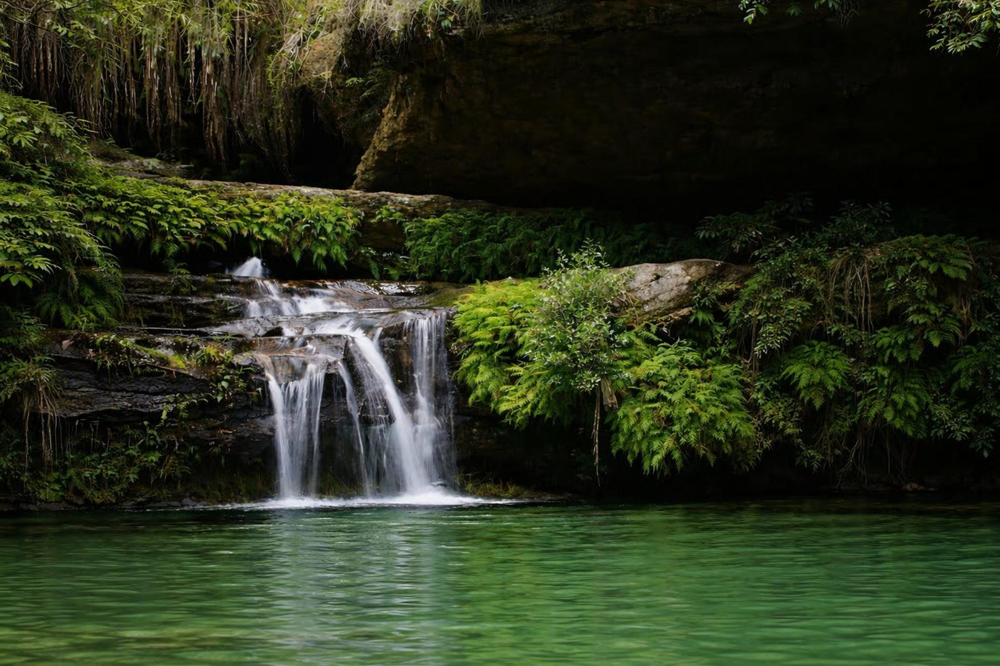
Itineraries
{itins} ready-made plans, from a half day passing through to three days deep in the forest. Pick one to see it hour by hour.
These plans come from this guide’s own itinerary data. Times are suggestions; your guide will adjust them to the weather and the animals.
Getting here
The only way in is by road. Ranomafana sits on the RN25, which drops from the highlands at Fianarantsoa down through the rainforest towards the east coast.
The route · distances to Ranomafana
Capital · via RN7Antananarivo412 km
Highlands · onto RN25Fianarantsoa65 km · about 2 hours
You are hereRanomafanaVillage · park gate 6.5 km on
East coast · RN25Mananjary139 km
Ways to arrive
Ranomafana is in the Vatovavy region of south-east Madagascar, 65 km from Fianarantsoa, the nearest city. Getting here from Antananarivo can be tricky, but every option below works.
From Antananarivo · Cotisse
A long day on the road
Book a seat by calling or WhatsApp-ing the Cotisse station in Antananarivo on +261 32 11 027 10, or in person. Pay at least 24 hours before departure: online with PayPal or MVola, or at any Cotisse station. Seats to Fianarantsoa cost 40,000 Ar, with buses by day and by night. The drive takes about 12 hours, with regular toilet stops and a lunch break. You then change in Fianarantsoa (see below).
From Antananarivo · Soatrans
Straight through the night
Book by calling +261 32 11 905 00 or at the station, and pay in person at least 24 hours ahead. The bus to Manakara (65,000 Ar) leaves Antananarivo at 13:30 and passes Ranomafana at around 03:00, where you can get off. Ranomafana is safe and calm at night. Staying at Setam Lodge, Forêt Australe, Au Domnatur or Karibotel? Get off outside your hotel rather than in town. Seats to Fianarantsoa cost 45,000 Ar if you would rather change there.
Charter a car
The flexible option
Buses and rough roads are not exactly relaxing, so many visitors hire a car and driver in Antananarivo. Search for private car hire or drivers there; we suggest Dadamanga as a good place to start. Expect roughly US$100–300 per car, depending on the company, whether you have a driver, how many of you there are and the time of year. The drive takes about 12 hours, stopping where and when you like: Antsirabe (5 hours in) and Ambositra (8 hours in, home to beautiful wood carving) are popular.
By air
Charter to Fianarantsoa
A private charter plane to Fianarantsoa airport takes about an hour. It has to be booked through a travel agency, and prices vary. From Fianarantsoa, continue by bus or car.
From Fianarantsoa
The short hop
65 km on the RN25. Regional taxi-brousses (shared minibuses) leave the bus station at any time of day: 7,000 Ar per person, about 2½ hours. Use the toilet before you get in.
From the east coast
Up from the sea
Mananjary is 139 km away along the RN25. Taxi-brousses also come up from Manakara.
Coming by Cotisse
Changing in Fianarantsoa
The daytime Cotisse reaches Fianarantsoa at about 19:00, after the last buses to Ranomafana, so plan to stay the night. Take the night bus instead and you arrive in the morning, ready to go straight to the regional bus station.
1Stay near the Cotisse station. Zomatel and Hotel Vannie usually have rooms, at 50,000–90,000 Ar a night. Hotel Vannie is about a 15-minute walk and Zomatel about 20. A taxi takes 5–10 minutes and should cost no more than 10,000 Ar; hotels further out, such as Mahamanina, cost a little more.
2In the morning, walk down the hill from Zomatel or Vannie (bear right) to the regional bus station. From anywhere else, any taxi driver will understand “brousse stationnement”.
3Regional brousses are not like Cotisse or Soatrans: you will be squeezed in, with your bags on the roof. Tell the driver or door attendant you are getting off at Ranomafana, and keep your valuables on you.
Good to know
The park gate is not in the village.
The park entrance is at Ambodiamontana, about 7 km up the RN25 from the centre of Ranomafana. Most places to stay are in the village, and there is no shuttle between the two.
1From the taxi-brousse station in the centre of town, take any brousse heading towards Fianarantsoa and tell them you are getting off at the park entrance: 20–25 minutes, 1,000–2,000 Ar each. Seats are scarce in the morning, when park staff ride them to work. Coming back is the same in reverse.
2Or walk back down, weather permitting: it is a beautiful hour downhill to town, and lemurs are sometimes seen near the road.
3Or sleep at the forest edge: Setam Lodge is an 800 m walk from the park entrance, and Centre ValBio sits beside the park. Stay →
Before you leave
Bring AriaryThe park takes cash only, and so do most lodges. Small notes help.
Book a bed{stays} places to stay, from the forest edge to the village. Browse stays →
Sources: Cotisse, Soatrans, private car, charter flight, Fianarantsoa connections, fares, journey times and getting to the park gate from this guide’s own local notes (October 2026); distances from Madagascar National Parks; taxi-brousse routes from the coast from Wikivoyage (updated November 2017). Roads and fares change, so check locally.
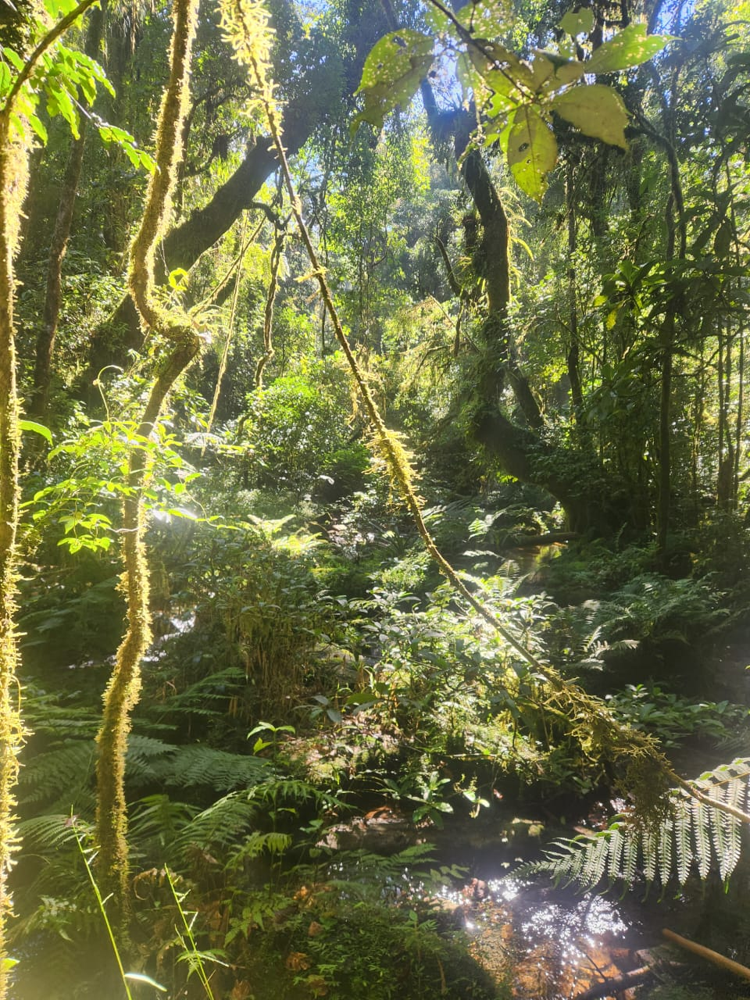
When to visit
The park is open all year. What changes is the rain, the cold, and which animals are easiest to find.
Two seasons, and the months between
November – April
Warm and wet
Daytime around 26°C and humid, with highs above 28°C from November to February. About 80% of the year’s rain falls in these months. January to March is cyclone season, and some days are too wet for the trails.
May – October
Cool and drier
Daytime around 22°C, nights down to 10°C. June to August is the cold season, when reptiles and some other animals are harder to find. Drier is relative here: it still rains.
★April · May · September · November
The sweet spots
Mild weather and less rain, with animals active again after the cold months. In October and November many lemurs have babies.
Month by month
Wet seasonDrier season★Best monthsFestival or event
Whatever the month
Rain shellBring one in every season.
Sturdy shoesThe trails are steep, and slippery when wet.
Go mid-morningThe park is open {parkHours}. Mid-morning, when the lemurs settle in to feed, is the best time to go in.
Sources: hot and cold seasons and the 80% rainfall share from Madagascar National Parks; daytime and night temperatures, cyclone season, best months and lemur births from SafariBookings; trail conditions from Wikipedia; festivals from this guide’s own events listings.
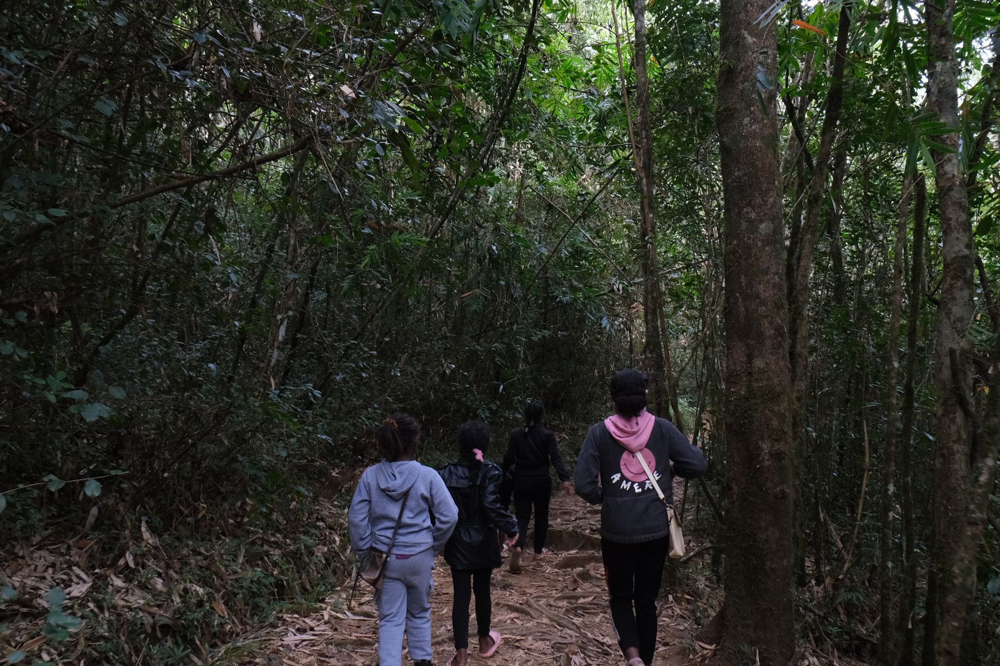
Know before you go
Visas, health, money, what to pack and a few words of Malagasy: the practical side of a trip, with links to the official advice.
Papers, health and safety
Visas
Most visitors need a visa for Madagascar. You can apply online before you fly on the government’s e-visa site. Check the rules for your own passport before you book.
Ranomafana itself is calm, but advice for Madagascar can change quickly. Read your government’s latest travel advice when you book, and again before you leave.
Sources: visas from Madagascar’s official e-visa site; health and safety from the government advice linked above (October 2026); money, packing and the promise from this guide’s own pages; Malagasy words in everyday use. Rules and advice change, so check before you travel.
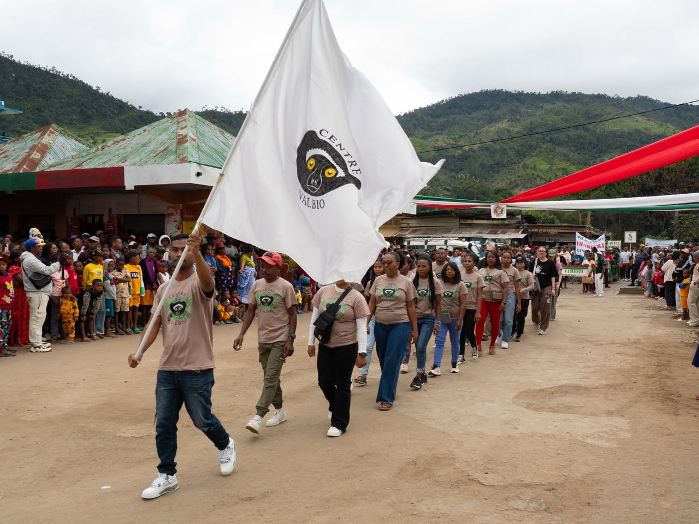
What’s on
Weekly markets and talks, national holidays, and the festivals of the highland year.
Dates for national holidays are fixed; village events can move. Check locally before you plan around one.
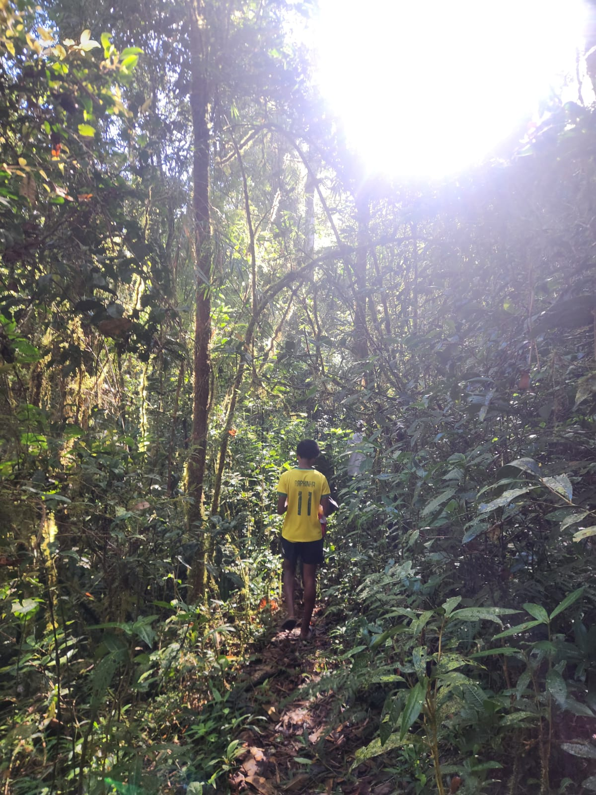
Field notes
Wildlife, practical advice and the people behind the forest. New stories are on the way.
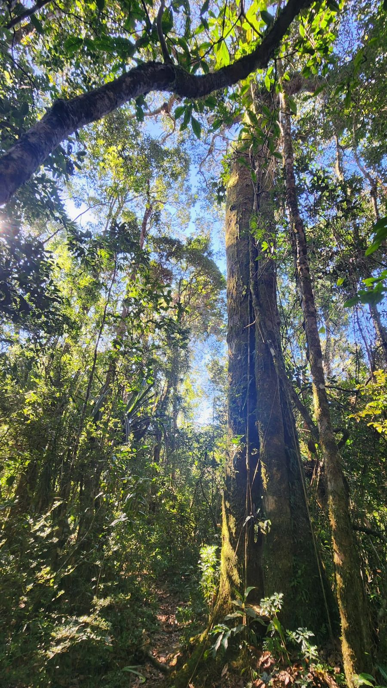
Why Madagascar, why Ranomafana.
A world found nowhere else, a valley you can explore in a few days, and a visit that helps keep it alive.
Where in the world
Madagascar is the world’s fourth-largest island, off the south-east coast of Africa. Ranomafana is in its south-east, on the road that drops from the highlands to the Indian Ocean.
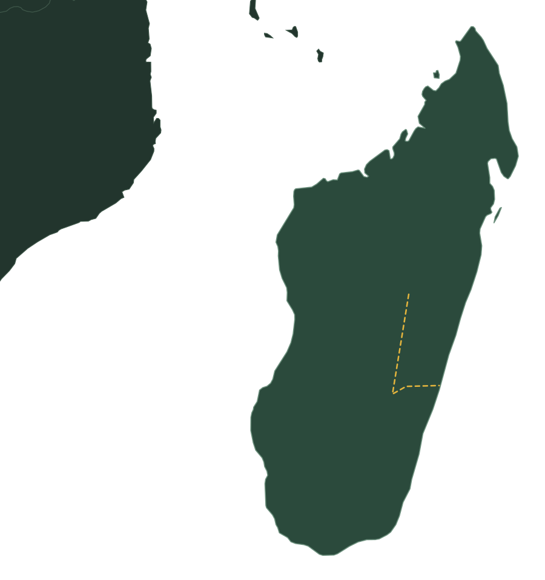
AfricaMozambique ChannelIndian OceanFianarantsoa
Map: Natural Earth. The dashed line is the road, simplified.
Why Madagascar
Why Ranomafana
The valley up close
From the park entrance at Ambodiamontana down to the village and its hot springs is about 7 km on the RN25, with the Namorona River beside you most of the way.
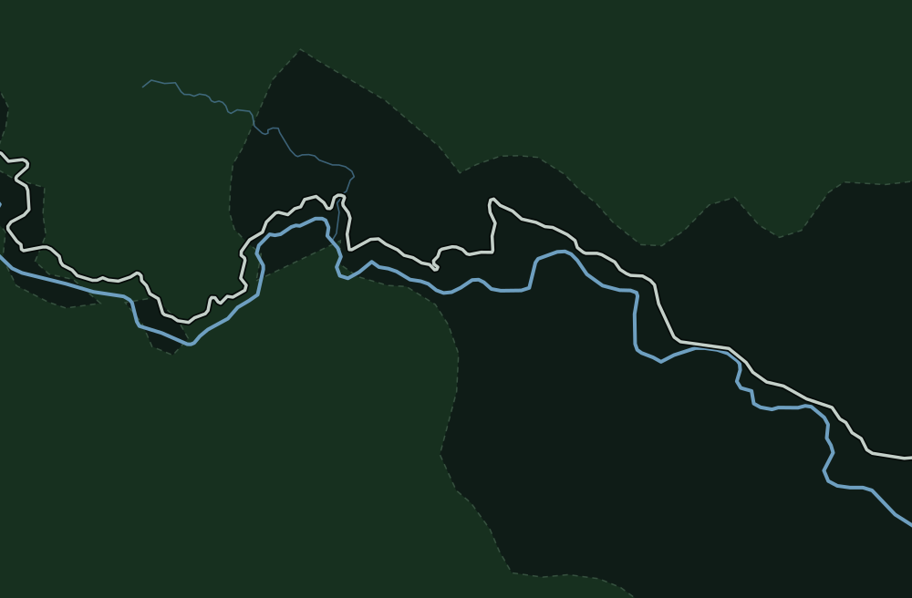
National park← Fianarantsoa · 65 kmMananjary · 139 km →
Every stay, meal and trek helps Ranomafana’s communities protect the rainforest they call home.
Villages ring the park, and daily life presses right up against the forest. The band of forest between the two, the buffer zone, is the most vulnerable ground of all: without a reason to keep it, the pressure is to clear it. Tourism gives that reason.
Madagascar is one of the world’s lowest-income countries, and the people who live beside this forest have to feel the benefit of protecting it. When they do, conservation stops being a sacrifice asked of them and becomes something that rewards them.
1You spend money with local guides, lodges, restaurants and artisans.
2That income gives families a living tied to a standing forest, not a cleared one.
3A protected buffer zone shields the park and the animals inside it.
4Thriving wildlife keeps drawing visitors, and the circle begins again.
Why your visit matters
On the fence about visiting? This is for you.
The rainforest, the lemurs and the hot springs bring international and Malagasy visitors to Ranomafana, and the people who feel that most are the ones who live here: the town’s 20,000 residents and the villages around the park.
Ecotourism brings in essential income. Entrance fees, guided tours and other park activities help pay for looking after the park, protecting its wildlife and supporting research, and much of what you spend goes to people who live here: the guides who lead every walk, and the cooks, hosts and craft sellers from Ranomafana and the villages around it. Hire local and buy local, and your money stays in the valley.
Since 1991, Madagascar National Parks (MNP) has managed Ranomafana National Park, under the supervision of Madagascar’s Ministry of Environment and Sustainable Development. Part of its mission is to involve local communities in conservation, and here they take part as guides, escorts, porters, cooks and labourers. The villages look after the forest themselves, too: local associations called VOIs manage parts of it, and at VOI Mitsinjo, by Ambatolahy, and VOI Ambohimagneva, the fees go straight to the village and the people who live there.
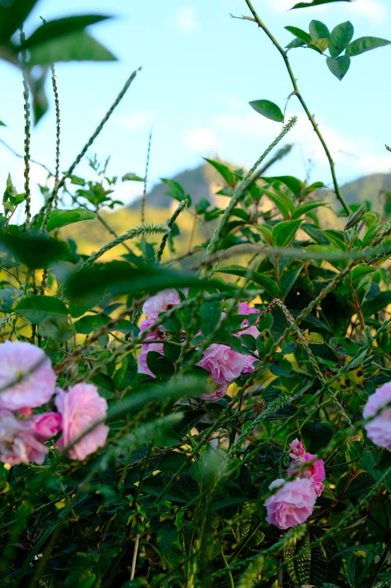
Who your visit supports
Local guides, who lead every walk in the park and agree their fees through their own association.
Villagers who work with Madagascar National Parks as escorts, porters, cooks and labourers.
The hotels, guesthouses, restaurants and shops in town, and the people who work in them.
Community reserves run by village associations, such as VOI Mitsinjo and VOI Ambohimagneva, where the fees go straight to the village and the people who live there.
Local artisans and shops, such as the craft shop by the park entrance and Studio oloNala, which works with Malagasy artists.
The park’s rangers, who patrol the forest and watch over its wildlife, and the firebreaks, boundary markers and watchtowers that protect it.
Research and development organisations around the park, which MNP works with, adding to what is known about the forest and supporting the local economy.
The 5,000 Ar community fee, paid at its own booth when you enter the park.
By the numbers
~19,000international visitors a year before the COVID-19 pandemic
~3,500a year since: fewer than one in five of the visitors it once had
20,000people live in Ranomafana, many working in its hotels, restaurants and shops
Without visitors, neither the town nor MNP can work as they should. The pandemic devastated ecotourism across Madagascar: in Ranomafana it took work and income from the guides, hotels, restaurants and shops that depend on visitors, and strained MNP’s conservation work.
Your visit is a small but truly meaningful part of helping this community recover what the pandemic took. Your presence is valued, and you are very welcome here.
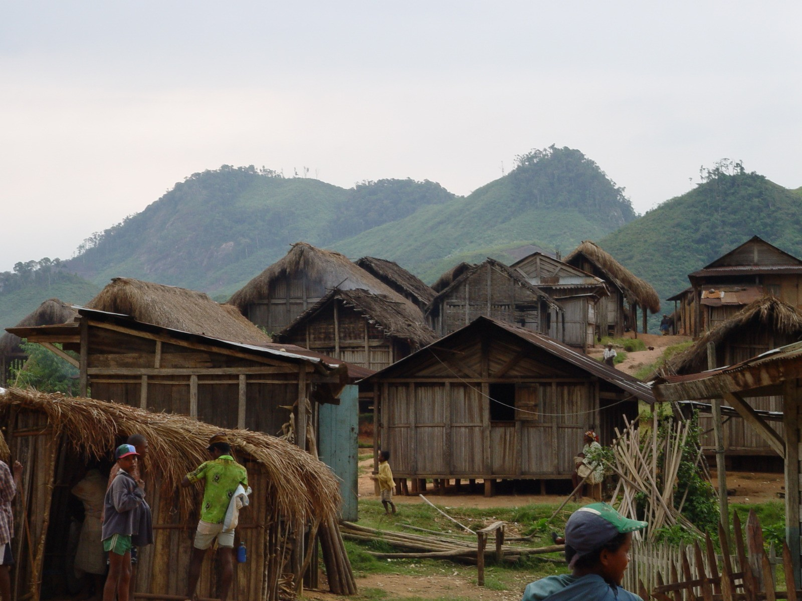
Follow your Ariary
Where your money goes.
A day in the park means three separate payments at the gate, and each goes somewhere different.
{entryFee}
Park entry, per adult per day
Goes to Madagascar National Parks, which runs the park: its rangers, its trails, the protection of its wildlife and support for research.
{communityFee}
Community fee
Paid at its own booth, separate from the park ticket. Madagascar National Parks calls it a communal tax.
{guideRange}
Guide, per group
Goes to your guide, who lives here. Guides agree their fees through their own association, and the spotters who find the animals are paid from it.
Fees vary
Village reserves
At VOI Mitsinjo and VOI Ambohimagneva, the fees go straight to the village and the people who live there.
Your choice
Beds, meals and crafts
Pay the hotels, restaurants and artisans of Ranomafana, and the people who work for them. Book direct where you can, so all of it reaches the place you chose.
Hotels, restaurants, activities, the events calendar and stories from the valley: everything there is to do in Ranomafana, in one place.
Plan your trip
Itineraries, the journey here, the best months, hiring a guide and the practical side: everything you need to plan a visit.
About Ranomafana
A rainforest valley in south-east Madagascar, its town of hot springs, and the people who look after it: Ranomafana at a glance.
At a glance
43,550hectares of montane rainforest
14kinds of lemur
125kinds of bird
20,000people in the town
The village and the valley
Life along the RN25, the river and the hills around town. Tap a photo to see it larger.
The valley of hot water
Where it is
In the Vatovavy region of south-east Madagascar, where the highlands drop into rainforest on the RN25: 65 km from Fianarantsoa, the nearest city, 139 km from Mananjary on the Indian Ocean, and 412 km by road from Antananarivo.
The name
Rano mafana means hot water in Malagasy. Thermal springs rise at the bottom of the valley, and the village pool, Station Thermale, is a short walk from most lodges.
The national park
43,550 hectares of montane rainforest, a national park since 1991 and a UNESCO World Heritage Site since 2007, run by Madagascar National Parks. The golden bamboo lemur was discovered here in 1986, and it is the reason the forest is protected.
Wildlife
Fourteen kinds of lemur and 125 kinds of bird, many found only in Madagascar, with chameleons, leaf-tailed geckos and tree frogs that come out after dark.
The town
About 20,000 people live in Ranomafana and the villages around the park. The village sits by the hot springs; the park entrance, at Ambodiamontana, is about 7 km up the RN25, with the Namorona River beside the road most of the way.
Run by the people who live here
Local guides lead every walk in the park, through their own association. Villages run two community reserves, VOI Mitsinjo and VOI Ambohimagneva, where the fees go straight to the village. The hotels, restaurants and craft shops are local businesses.
Sources: the park’s size, species counts and dates from Madagascar National Parks; distances from Madagascar National Parks and this guide’s Getting here page; the town’s population, the guides’ association and the community reserves from this guide’s own local notes (October 2026), as on the Why visit page.
Documents
Plans and information about Ranomafana’s future, and the Commune’s public documents, to read and download.
Ranomafana in pictures
The forest and its wildlife, the river, the waterfalls and the town, all photographed in Ranomafana. Tap a photo to see it larger and where it was taken.
Tap ♥ on the photos you like best: they move to the top of the gallery. Your likes are kept on this device.
Photos by Kyle Schmidt and the places listed in this guide, unless noted on the photo’s own listing.
Municipal services
The Commune, the Gendarmerie and the hospital: public services in Ranomafana, with the Commune’s public documents.
The Commune
The town hall of Ranomafana: the Commune’s services for residents and visitors, and how to reach them.
The Commune of Ranomafana is preparing the list of its services, with opening hours and contacts. It will appear here. Until then, the team can pass on your question.